Inteligência Artificial
Inteligência Artificial e Machine Learning
Resumo em construção
VoltarGithub do projeto
Google Colab
BD Risco de Crédito (Credit Data)
BD Censo
Sumário
===== INTRODUÇÃO =====
Inteligência artificial é a área da Ciência da Computação responsável pelo desenvolvimento de sistemas que simulem a capacidade humana de resolver problemas.

Exemplos de aplicações com Machine Learning:
- Sistemas Especialistas (Baseado em profissionais especialistas humanos)
- Sistema de Recomendação
- Reconhecimento Facial (Visão computacional)
- Reconhecimento de Movimentos
- Reconhecimento de Sons / Fala (Processamento de linguagem natural)
- Robótica e Automação
- Realidade Virtual
Terminologias:
- Inteligência Artificial: Termo geral, área da Ciência da Computação responsável pelo desenvolvimento de sistemas que simulem a capacidade humana de resolver problemas
- Inteligência Computacional: Redes neurais, computação evolucionária, lógica nebulosa (fuzzy)
- Machine Learning (Aprendizado de Máquina): Métodos matemáticos para treinar algoritmos
- Data Mining (Mineração de Dados): Extrair conhecimentos de base de dados, usando métodos de Machine Learning
- Redes Neurais: Tipo de Machine Learning, como um algoritmo
- Deep Learning (Aprendizado Profundo): Muito mais dados e processadores mais potentes (Rede Neural com muitas camadas)
- Big Data: Imenso volume de dados (Necessário algoritmos de Machine Learning para realizar o tratamento dos dados)
- Ciência de Dados: Exploração e análise de dados, envolve Ciência da Computação + Estatística, além de Machine Learning
Machine Learning
Métodos Preditivos: Previsão resultante de conjunto de atributos.
- Classificação: Dividir atributos por determinadas classes (Rótulos)
- Ex: Pessoas que gostam de Rock / Pessoas que não gostam de Rock
- Regressão: Previsão realizada através da análise de valores numéricos, como dados históricos
- Ex: Com base na temperatura, umidade e pressão do ar, ocorre-se a previsão da velocidade do vento
Métodos Descritivos:
- Associação: Dados em comum
- Ex: Maior histórico de compra de carne e cerveja nos finais de semana
- Agrupamento: Agrupar dados em comum (Cria grupos)
- Ex: Com base de dados de histórico de mercado, agrupar clientes que compram jogos eletrônicos
- Detecção de Desvios (Outliers): Detectar "anomalias" em grupos de dados
- Ex: Detectar doping em atletas (Atleta desempenhando além do normal)
- Descoberta de Padrões Sequenciais: Detectar "relações" entre grupos de dados
- Ex: Leitor de Harry Potter tende a gostar de livros de Harry Potter
- Sumarização: Abstrair dados de um grupo maior, de acordo com atributos solicitados
- Ex: Em base de dados de clientes, resgatar somente pessoas maiores de 50 anos, de origem japonesa
Tipos de Machine Learning:
- Supervisonada:
- Classificação
- Regressão
- Não Supervisonada:
- Associação
- Agrupamento
- Detecção de Desvios
- Padrões Sequenciais
- Sumarização
- Reforço
Aprendizagem Supervisionada:
Contexto: Classificar se uma imagem refere-se ao Homer Simpson, ou ao Bart Simpson.
Fase 1: Imagens -> Extração de características (Montagem da base de dados) -> Algoritmo de aprendizagem (Feito por supervisor) = Modelo Aprendido
* Extração de Características: No Homer, a cabeça é arredondada, enquanto no Bart a cabeça não é arredondada, etc.
* Algoritmo de aprendizagem: Supervisor submete imagens do Homer, informando características do Homer, também imagens do Bart, informando características do Bart. Dessa forma, será realizada uma padronização das classes Homer e Bart, de acordo com suas características personalizadas.
Fase 2: Imagem desconhecida -> Extração de características -> Submissão ao modelo aprendido = Modelo dirá que a imagem é da classe Bart
Aprendizagem Não Supervisionada:
Analisa automaticamente os dados (Associação, Agrupamento), ou seja, não há supervisão nem treinamento manual prévio, necessitando somente de análise para determinar o significado dos padrões encontrados (Se o padrão resultante é, de fato, pertinente). Nessa aprendizagem não é feita a predição dos dados, e sim somente a descrição (Descritiva).
Exemplo: Pessoa que compra X também compra Y. Portanto, toda pessoa que comprará X também comprará Y
Aprendizagem por Reforço:
Aprender com as interações com o ambiente (causa e efeito), aprendendo com sua própria experiência. Aprendizagem muito comum utilizada em ambientes SMA (Sistema Multiagente - Onde há vários agentes interagindo no ambiente).
Exemplo: Robô automatizado bate em parede e danifica-se. Dessa forma, concluirá que deve-se evitar bater em parede
===== CLASSIFICAÇÃO =====
Levando em consideração o exemplo de análise de risco de crédito. Cada registro pertence a uma classe e possui um conjunto de atributos previsores. Na aprendizagem supervisionada, o valor do atributo meta sempre é conhecido. Com uma base de dados como o exemplo da tabela abaixo, é submetido ao treinamento de algoritmos de Machine Learning, para então prever o risco automaticamente.
- Atributos Previsores: Histórico de crédito (Bom, ruim ou desconhecido), dívida (Baixa ou alta), garantias (Nenhuma ou adequada), renda anual (Menor que 15 mil, entre 15 mil e 35 mil, maior que 35 mil) - Variáveis Independentes
- Atributos Meta / Classe: Risco (Baixo, moderado ou alto) - Variáveis Dependentes
| Histórico de crédito | Dívida | Garantias | Renda anual | Risco |
|---|---|---|---|---|
| Ruim | Alta | Nenhuma | Menos de 15 mil | Alto |
| Desconhecido | Baixo | Nenhuma | Entre 15 mil e 35 mil | Moderado |
| Desconhecido | Baixo | Adequada | Maior que 35 mil | Baixo |
Representação da Classificação (Método Indutivo):
- Fase 1: Conjunto de exemplos (Atributos previsores + Atributos meta) -> Sistema de aprendizado = Classificador
- Fase 2: Caso a ser classificado (Atributo meta não conhecido) -> Classificador = Decisão
Exemplo (Indução com aprendizagem supervisionada):
- Fase 1: Homer e Bart -> Extração de características -> Algoritmo de aprendizagem e Supervisor = Modelo aprendido
- Fase 2: Bart com Skate -> Extração de características -> Modelo aprendido = Bart
----- Pré-processamento de dados -----
Tipos de variáveis
- Numéricas: Possuem valor numérico
- Contínua: Números reais (Temperatura, altura, peso, salário, etc - 44.2)
- Discreta: Conjnto de valores finito, valores inteiros (Contagem de algo - 15)
- Categóricas: Representam categorias, possuem valor String
- Nominal: Dados não mensuráveis (Sem ordenação: cor dos olhos e gênero, id, nome, etc - "azul")
- Ordinal: Categorizado sob ordenação (Tamanho: P, M e G)
* A conversão de variável categórica para discreta geralmente ocorre quando a categoria básica representa 1, categoria moderada representa 2 e categoria avançada representa 3.
1. Importar libraries:
Importar libraries plotly (Geração de gráficos dinâmicos), pandas (Gerenciamento de arquivos CSV), numpy, seaborn e matplotlib.pyplot (Visualização de gráficos), plotly.express (Chamará a library plotly).
!pip install plotly --upgrade
import pandas as pd
import numpy as np
import seaborn as sns
import matplotlib.pyplot as plt
import plotly.express as px
Base de Dados (Risco de Crédito - Credit Data)
Objetivo da IA é dizer se a pessoa, de acordo com suas condições, pagará ou não o crédito (default 0 ou 1).
Acessar BD Risco de Crédito (credit_data.csv)| clientid | income | age | loan | default | |
|---|---|---|---|---|---|
| 0 | 1 | 66155.925095 | 59.017015 | 8106.532131 | 0 |
| 4 | 5 | 66952.688845 | 18.584336 | 8770.099235 | 1 |
clientid - Variável categórica nominal
income (Renda anual) - Variável numérica contínua
age - Variável numérica contínua
loan (Dívida) - Variável numérica contínua
Default 0: Pagou o empréstimo - Variável numérica discreta
Default 1 (Devendo): Não pagou o empréstimo - Variável numérica discreta
2. Exploração dos dados:
base_credit = pd.read_csv('/content/credit_data.csv') #Upload no Colab do CSV com dados (Atente-se ao local do upload '/content/')
base_credit #Ver dados
base_credit_head(10) #Ver 10 primeiros dados
base_credit.tail(8) #Ver 8 últimos dados
base_credit.describe() #Mostrará, para cada atributo numérico: count (Quantidade total), mean (Média), sid (Desvio padrão - Variação/afastamento dos dados em relação ao valor da média), min/25%/50%/75%/max (Quartis - Valores mínimos/percentuais/máximos)
base_credit[base_credit['income'] == 1000.00] #Mostrar pessoa com renda 1000.00
base_credit[base_credit['loan'] >= 1.377] #Mostrar pessoa com dívida menor ou igual a 1.377
3. Visualização em gráficos:
np.unique(base_credit['default']) #Mostrar quais os números presentes nessa classe (0 quando a pessoa paga o empréstimo, 1 quando não paga o empréstimo)
np.unique(base_credit['default'], return_counts=True) #Ver quantos registros possui cada classe (Zeros e Uns)
sns.countplot(x = base_credit['default']); #Mostrar dados acima em gráfico de barras (Gráfico 1)
plt.hist(x = base_credit['age']); #Gerará gráfico histograma, separados em classes/intervalos de idades (Gráfico 2)
plt.hist(x = base_credit['income']); #Gráfico histograma de renda (Gráfico 3)
plt.hist(x = base_credit['loan']); #Gráfico histograma de dívida (Gráfico 4)
grafico = px.scatter_matrix(base_credit, dimensions=['age','income','loan'], color='default') #Gráfico dinâmico scatter (Dispersão) que combina os atributos de acordo com 'default' (Pagou/Devendo)
grafico.show() #Imagem dos gráficos com colorações internas
")
") 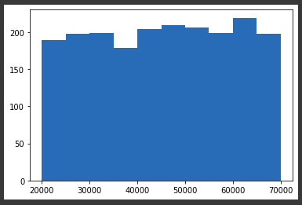
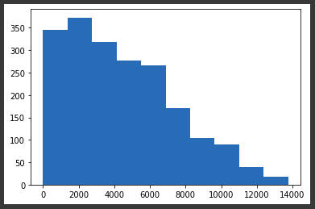
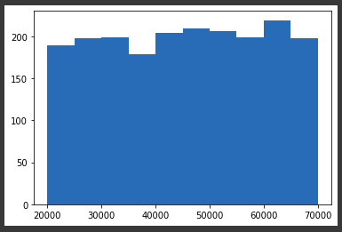
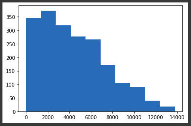
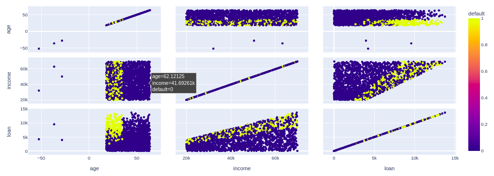
4.1. Tratamento de valores inconsistentes:
No gráfico acima, existem idades negativas, ou seja, valores inconsistentes.
base_credit.loc[base_credit['age'] < 0] #Localizar registros (Ou base_credit[base_credit['age'] < 0])
#Apagar coluna inteira do registro inconsistente
base_credit2 = base_credit.drop('age', axis=1) #Axis 0 é para linha e Axis 1 é para coluna
base_credit2
base_credit.index #Index é o nº do registro no BD, conforme tabela acima
base_credit[base_credit['age'] < 0].index
#Apagar somente células de registros com valores inconsistentes
base_credit3 = base_credit.drop(base_credit[base_credit['age'] < 0].index)
base_credit3
base_credit3.loc[base_credit3['age'] < 0] #Apagou, então retornará nenhum registro encontrado
#Preencher os valores inconsistentes manualmente (Geralmente preencher com média da classe)
base_credit.mean() #Localizar média de valores (Ou base_credit['age'].mean())
base_credit['age'][base_credit['age'] > 0].mean() #Média não considerando valores negativos
base_credit.loc[base_credit['age'] < 0, 'age'] = 40.92 #Preencher idades negativas com média de idades
base_credit.loc[base_credit['age'] < 0] #Verificar se existem idades negativas (Não haverão idades negativas)
4.2. Tratamento de valores faltantes
No dataframe há registros de clientes que não informaram a idade.
base_credit.isnull() #Verificar se há dados faltantes (True é faltante)
base_credit.isnull().sum() #Mostrará quantidade de dados faltantes
base_credit.loc[pd.isnull(base_credit['age'])] #Ver quais linhas possuem idade faltante
#Preencher valores faltantes com média
base_credit['age'].fillna(base_credit['age'].mean(), inplace=True) #Preencher automaticamente com média
base_credit.loc[pd.isnull(base_credit['age'])] #Verificar se existem idades faltantes (Não haverão idades faltantes)
base_credit.loc[(base_credit['clientid']==29) | (base_credit['clientid']==31) | (base_credit['clientid']==32)]
base_credit.loc[base_credit['clientid'].isin([29,31,32])]
5. Separação entre previsores e classes:
Variável x armazenará somente atributos previsores (income, age e loan) e outra variável y para armazenar somente a classe. Geralmente atributos únicos, como id's, são descartados nessa etapa.
X_credit = base_credit.iloc[:,1:4].values #':' Indica selecionar todas as linhas do dataframe, '1:4' indica selecionar da coluna 1 até a 3
y_credit = base_credit.iloc[:, 4].values #Indica somente coluna 4
X_credit #Ver conteúdo da variável ('y_credit' ver variável y, 'type(X_credit)' para ver o tipo)
6. Escalonamento dos atributos:
Deixar valores na mesma escala: Selecionando os valores mínimos/máximos, tem-se valores muito distantes entre si, o que pode ser problemático para algoritmos de IA baseados em distância. Portanto, deve-se realizar a padronização entre tais valores, para que os mesmos fiquem na mesma escala, pois a ordem de importância que o algoritmo dará aos valores maiores, onde valores maiores possuem peso maior, será inconsistente nesse caso (Ex: loan mais importante que age, por razão de possuir valores maiores). A padronização é mais indicada quando há outliers no dataset (Registros muito fora do padrão): Nesse caso, utilizaremos padronização para o exemplo em questão. Abaixo, seguem fórmulas para solucionar tais problemas.
- Padronização(Standardisation): x = ((x-media(x)) / desvioPadrao(x))
- Normalização(Normalization): x = ((x-min(x)) / (max(x)-min(x)))
X_credit[:,0].min(), X_credit[:,1].min(), X_credit[:,2].min() #Selecionar valores mínimos de cada atributo
X_credit[:,0].max(), X_credit[:,1].max(), X_credit[:,2].max() #Seelcionar valores máximos de cada atributo
from sklearn.preprocessing import StandardScaler #Sklearn é library para ML no Python, o StandardScaler fará a padronização
scaler_credit = StandardScaler()
X_credit = scaler_credit.fit_transform(X_credit) #Fará a padronização da variável x
X_credit[:,0].min(), X_credit[:,1].min(), X_credit[:,2].min() #Valores mínimos e máximos padronizados (Não há problema de valores negativos, pois considera-se, nesse caso, uso da média e desvio padrão)
X_credit[:,0].max(), X_credit[:,1].max(), X_credit[:,2].max()
X_credit
Base de Dados (Censo)
Objetivo da IA é dizer se a pessoa, de acordo com suas condições, ganhará ou não mais que 50mil por ano (income <=50K ou >50K).
Acessar BD Censo (census.csv)| age | workclass | final-weight | education | education-num | marital-status | occupation | relationship | race | sex | capital-gain | capital-loos | hour-per-week | native-country | income | |
|---|---|---|---|---|---|---|---|---|---|---|---|---|---|---|---|
| 0 | 39 | State-gov | 77516 | Bachelors | 13 | Never-married | Adm-clerical | Not-in-family | White | Male | 2174 | 0 | 40 | United-States | <=50K |
| 32556 | 27 | Private | 257302 | Assoc-acdm | 12 | Married-civ-spouse | Tech-support | Wife | White | Female | 0 | 0 | 38 | United-States | <=50K |
| 32557 | 40 | Private | 154374 | HS-grad | 9 | Married-civ-spouse | Machine-op-inspct | Husband | White | Male | 0 | 0 | 40 | United-States | >50K |
workclass (Classe de trabalho) - Variável categórica nominal
final-weight (Pontuação segundo censo) - Variável numérica contínua
education - Variável categórica ordinal
education-num (Nº de anos de estudo) - Variável numérica discreta
marital-status, relationship, race, sex - Variáveis categóricas nominais
capital-gain, capital-loos (Ganho/perda de capital) - Variáveis numéricas contínuas
hour-per-week (Horas trabalhadas por semana) - Variável numérica discreta
native-country - Variável categórica nominal
income (Renda/Ganho por ano) - Variável categórica ordinal
2. Exploração dos dados:
base_census = pd.read_csv('/content/census.csv')
base_census48.000000
base_census.describe()
base_census.isnull().sum() #Verificar se há registros com valores faltantes
3. Visualização em gráficos:
np.unique(base_census['income'], return_counts=True) #Ver contagem de dados para cada classe
sns.countplot(x = base_census['income']); #Ver em gráfico de barras (Gráfico 1)
plt.hist(x = base_census['age']); #Ver em histograma de idades (Gráfico 2)
plt.hist(x = base_census['education-num']); #Ver em histograma de nº de anos estudados (Gráfico 3)
plt.hist(x = base_census['hour-per-week']); #Ver em histograma de nº de horas trabalhadas por semana (Gráfico 4)
grafico = px.treemap(base_census, path=['workclass','age'])
grafico.show() #Ver gráficos dinâmicos de agrupamentos entre classe de trabalho e idade (Gráfico 5)
grafico = px.treemap(base_census, path=['occupation','relationship','age'])
grafico.show() #Ver gráficos dinâmicos de agrupamentos entre ocupação, relacionamento e idade (Gráfico 6)
grafico = px.parallel_categories(base_census, dimensions=['occupation','relationship'])
grafico.show() #Ver gráfico dinâmico de categorias paralelas entre ocupação e relacionamento (Gráfico 7)
grafico = px.parallel_categories(base_census, dimensions=['workclass','occupation','income'])
grafico.show() #Ver gráfico dinâmico de categorias paralelas entre classe de trabalho, ocupação e renda (Gráfico 8)
grafico = px.parallel_categories(base_census, dimensions=['education','income'])
grafico.show() #Ver gráfico dinâmico de categorias paralelas entre educação e renda (Gráfico 9)
")
")
") 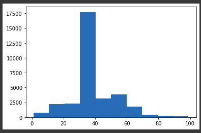
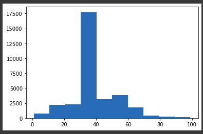
")
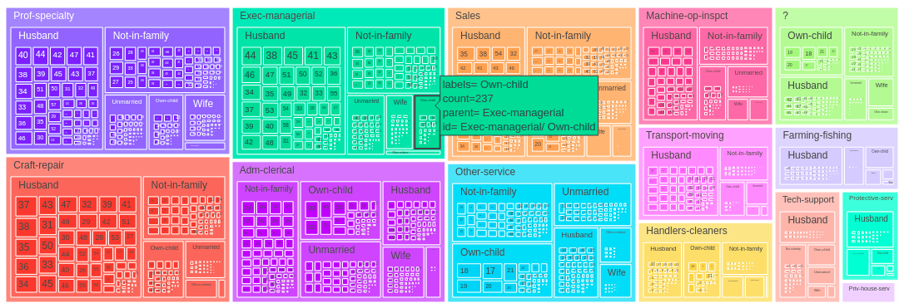
")
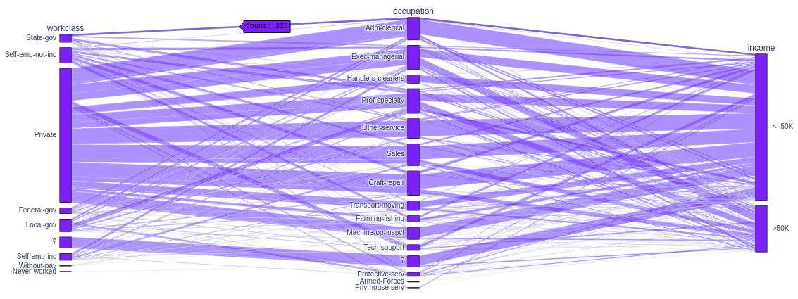
")
4. Separação entre previsores e classes:
base_census.columns
X_census = base_census.iloc[:,0:14].values #Criar variável de previsores (Todas linhas, da coluna 0 à 14 - age à native-country)
X_census #X_census[0]
y_census = base_census.iloc[:,14].values #Criar variável da classe (Todas linhas, somente coluna 14 - income)
y_census
5.1. Tratamento de atributos categóricos (LabelEncoder):
Neste caso, como há atributos categóricos (String), será necessário convertê-los em dados numéricos: Em LabelEncoder, cada tipo de valor no registro será transformado em um número de referência.
from sklearn.preprocessing import LabelEncoder
label_encoder_teste = LabelEncoder()
X_census[:,1]
teste = label_encoder_teste.fit_transform(X_census[:,1]) #Aplicar LabelEncoder
teste #Cada tipo de valor do workclass será convertido em um nº de sua referência (Private é 4, State-gov é 7...)
X_census[0]
#Transformar cada atributo para LabelEncoder
label_encoder_workclass = LabelEncoder()
label_encoder_education = LabelEncoder()
label_encoder_marital = LabelEncoder()
label_encoder_occupation = LabelEncoder()
label_encoder_relationship = LabelEncoder()
label_encoder_race = LabelEncoder()
label_encoder_sex = LabelEncoder()
label_encoder_country = LabelEncoder()
#Aplicar LabelEncoder para cada atributo categórico
X_census[:,1] = label_encoder_workclass.fit_transform(X_census[:,1])
X_census[:,3] = label_encoder_education.fit_transform(X_census[:,3])
X_census[:,5] = label_encoder_marital.fit_transform(X_census[:,5])
X_census[:,6] = label_encoder_occupation.fit_transform(X_census[:,6])
X_census[:,7] = label_encoder_relationship.fit_transform(X_census[:,7])
X_census[:,8] = label_encoder_race.fit_transform(X_census[:,8])
X_census[:,9] = label_encoder_sex.fit_transform(X_census[:,9])
X_census[:,13] = label_encoder_country.fit_transform(X_census[:,13])
X_census[0]
X_census
5.2. Tratamento de atributos categóricos (OneHotEncoder):
Um dos problemas de somente utilizar LabelEncoder são as inúmeras categorias e valores muito amplos (Algoritmo de IA considerará atributo 20 mais importante que o 3, somente por razão do nº 20 ser maior). No OneHotEncoder, cada tipo de registro (Categoria) receberá um número/código identificador (Do tipo Dummy), de acordo com a quantidade de tipos de registros neste atributo (Ex: Carros Gol, Pálio e Uno: São 3 tipos de registros do atributo 'Carro', então Gol será 100, Pálio será 010 e Uno será 001).
len(np.unique(base_census['workclass'])) #9 categorias diferentes: Códigos de 9 colunas (Ex: State-gov 10000000)
len(np.unique(base_census['occupation'])) #15 categorias diferentes: Códigos de 10 colunas
from sklearn.preprocessing import OneHotEncoder
from sklearn.compose import ColumnTransformer
onehotencoder_census = ColumnTransformer(transformers=[('OneHot', OneHotEncoder(), [1,3,5,6,7,8,9,13])], remainder='passthrough') #Transformar em OneHotEncoder, passar lista de atributos (Índices) para transformação e passthrough para não exlcuir os demais atributos
X_census = onehotencoder_census.fit_transform(X_census).toarray() #Recriar base de dados com codificação OneHotEncoder feita
X_census #X_census[0] na linha 0
X_census.shape #Aumentou-se para 108 colunas com o OneHotEncoder (Resultante do somatório das quantidades de colunas de todos os códigos gerados para cada categoria de cada atributo)
6. Escalonamento dos atributos:
from sklearn.preprocessing import StandardScaler
scaler_census = StandardScaler()
X_census = scaler_census.fit_transform(X_census)
X_census[0] #Converterá os atributos numéricos para o mesmo formato de código também
Introdução a avaliação de algoritmos
Levando em conta o exemplo da base de dados Risco de Crédito, o algoritmo de IA analisará os atributos previsores, juntamente com seus respectivos dados, gerando assim o Modelo do Algoritmo, como, por exemplo, um algoritmo Naïve Bayes criará uma tabela de probabilidade, para que, quando quiser classificar registros, utilizará estimativa da probabilidade de cada classe (Ex: Probabilidade da classe Risco alto, moderado e baixo). Um algoritmo de Árvore de Decisão, conforme dados analisados, construirá árvore de decisão, que será percorrida cada vez para identificar a decisão, onde tal nó final será a classe.
Após isso, para fazer a classificação de novos registros à base de dados, submete-se o mesmo para o Modelo do Algoritmo e gerará, com isso, a resposta da classificação. Para sabe a classe que ao qual o registro será classificado, tem-se a base de dados de treinamento e a base de dados de teste, onde, em ambas, a classe de resultado já está informada e os registros são bem diferentes quando comparados uma a outra (Nunca pode testar o algoritmo com os mesmos registros de seu treinamento). Então, submete-se a base de dados do treinamento ao algoritmo (Base de dados de treinamento sempre é bem maior que a de teste), onde o algoritmo gerará o Modelo. Após isso, testa-se o algoritmo conferindo seus resultados com a base de dados de teste (Base bem diversificada, para a maioria de possibilidades em teste).
Com o teste pronto, o supervisor saberá identificar, usando como base os registros de teste, quantos o algoritmo acertou e errou (Ex: O 1º registro está classificado na base de teste como alto, e o algoritmo identificou como Alto (Acerto). O 2º registro está classificado na base de teste como Moderado, e o algoritmo identificou como Baixo (Erro)). Assim, medindo acertos/erros em percentuais, tem-se a medição da eficiência do algoritmo de IA.
Divisão das bases em Treinamento e Teste:
from sklearn.model_selection import train_test_split
#Dividir base Risco de Crédito
X_credit_treinamento, X_credit_teste, y_credit_treinamento, y_credit_teste = train_test_split(X_credit,y_credit,test_size = 0.25,random_state = 0) #X: previsores e Y: classe. Tamanho da base de Teste será 0.25 (75% da base de dados para treinar, 25% para testar), random_state para manter registros de trainamento/teste e consguir compará-los
X_credit_treinamento.shape #1500 registros previsores para treinamento, 3 colunas (income,age,loan)
y_credit_treinamento.shape #1500 registros classe, somente coluna default
X_credit_teste.shape, y_credit_teste.shape #25% dos dados total para cada variável da base teste (X previsores, Y respostas/classe)
#Dividir base Censo
X_census_treinamento, X_census_teste, y_census_treinamento, y_census_teste = train_test_split(X_census,y_census,test_size = 0.15,random_state = 0) #85% dos registros para base Treinamento, 15% para base Teste
X_census_treinamento.shape, y_census_treinamento.shape #27676 registros previsores, 108 colunas. 27676 registros de resposta/classe
X_census_teste.shape, y_census_teste.shape #4855 registros previsores, 108 colunas. 4855 registros de resposta/classe
Salvar bases:
import pickle
#Salvar em disco, wb (Write): Criará arquivos 'credit.pkl' e 'census.pkl'
with open('credit.pkl', mode='wb') as f:
pickle.dump([X_credit_treinamento, y_credit_treinamento, X_credit_teste, y_credit_teste], f)
with open('census.pkl', mode='wb') as f:
pickle.dump([X_census_treinamento, y_census_treinamento, X_census_teste, y_census_teste], f)
----- Naïve Bayes -----
Algoritmo bastante utilizado em mineração de texto (Filtragem de spam, emoção do narrador com relação à sua frase, separação de documentos, etc), baseado em probabilidade (Teorema de Bayes). Usando o exemplo da Base de Crédito, o algoritmo criará a tabela de probabilidade (Conforme abaixo), baseado no histórico de dados. Na tabela, o Risco de Crédito é o atributo Classe. A cada nova submissão para descobrir qual o risco de crédito, os atributos previsores deverão ser submetidos à essa tabela
Montagem da tabela de probabilidade:
Para tal, precisa-se fazer a contagem do risco, onde a classe (Risco de Crédito) fica à esquerda superior, seguida de seus atributos. Conforme histórico de 14 ítens, tem-se 6 considerados 'Alto' (6/14), 3 'Moderado' e 5 'Baixo'. Baseando-se no Risco de Crédito, tem-se 5 'Boa', 5 'Desconhecida' e 4 'Ruim'. Com isso, intercalando os valores nas intersecções, analisa-se quantas vezes tem-se História de crédito 'Boa' e Risco 'Alto' (1/6, onde 1 é 'Boa' e 'Alto', e 6 o valor total de 'Altos'), seguindo respectivamente, para os demais atributos nessa mesma lógica. Então, a soma de todos os numeradores preenchidos deve ser igual ao valor total no valor da classe na situação em questão (5 'Boa', conforme tabela). Na mesma lógica, a soma dos numeradores para cada valor do atributo da classe, com relação ao seu valor total naquela situação, deve ser a mesma com seu valor total (6 'Alto', conforme tabela).
| História do Crédito | Dívida | Garantias | Renda anual | |||||||
|---|---|---|---|---|---|---|---|---|---|---|
| Risco de crédito 14 |
Boa 5 |
Desconhecida 5 |
Ruim 4 |
Alta 7 |
Baixa 7 |
Nenhuma 11 |
Adequada 3 |
<15000 3 |
>=15000 a <=35000 4 |
>35000 7 |
| Alto 6/14 |
1/6 | 2/6 | 3/6 | 4/6 | 2/6 | 6/6 | 0/6 | 3/6 | 2/6 | 1/6 |
| Moderado 3/14 |
1/3 | 1/3 | 1/3 | 1/3 | 2/3 | 2/3 | 1/3 | 0/3 | 2/3 | 1/3 |
| Baixo 5/14 |
3/5 | 2/5 | 0/5 | 2/5 | 3/5 | 3/5 | 2/5 | 0/5 | 0/5 | 5/5 |
| História do Crédito | Dívida | Garantias | Renda anual | Risco |
|---|---|---|---|---|
| Ruim | Alta | Nenhuma | <15000 | Alto |
| Desconhecida | Alta | Nenhuma | >=15000 a <=35000 | Alto |
| Desconhecida | Baixa | Nenhuma | >=15000 a <=35000 | Moderado |
| Desconhecida | Baixa | Nenhuma | >35000 | Alto |
| Desconhecida | Baixa | Nenhuma | >35000 | Baixo |
| Desconhecida | Baixa | Adequada | >35000 | Baixo |
| Ruim | Baixa | Nenhuma | <15000 | Alto |
| Ruim | Baixa | Adequada | >35000 | Moderado |
| Boa | Baixa | Nenhuma | >35000 | Baixo |
| Boa | Alta | Adequada | >35000 | Baixo |
| Boa | Alta | Nenhuma | <15000 | Alto |
| Boa | Alta | Nenhuma | >=15000 a >= 35000 | Moderado |
| Boa | Alta | Nenhuma | >35000 | Baixo |
| Ruim | Alta | Nenhuma | >=15000 a <=35000 | Alto |
Na prática:
Análise de risco de crédito para novo cliente com os dados (História de crédito: Boa, Dívida: Alta, Garantias: Nenhuma, Renda: >35000). Nesse caso, usa-se, do histórico na tabela, somente as colunas pertinentes ao exemplo atual (História de crédito somente 'boa' - descarta-se Desconhecida e Ruim, Dívida somente 'alta', Garantias somente 'nenhuma' e Renda Anual somente '>35000'). Para o cálculo da probabilidade em cada classe, usa-se a fórmula: 'Multiplicar, nas células pertinentes, todas as frações na mesma linha'.
- Probabilidade risco de crédito Alto: 6/14 * 1/6 * 4/6 * 6/6 * 1/6 = 0,0079
- Probabilidade risco de crédito Moderado: 3/14 * 1/3 * 1/3 * 2/3 * 1/3 = 0,0052
- Probabilidade risco de crédito Baixo: 5/14 * 3/5 * 2/5 * 3/5 * 5/5 = 0,0514
- Percentual Alto: (0,0079 / (0,0079+0,0052+0,0514)) * 100 = 12,24 %
- Percentual Moderado: (0,0052 / (0,0079+0,0052+0,0514)) * 100 = 8,06 %
- Percentual Baixo: (0,0514 / (0,0079+0,0052+0,0514)) * 100 = 79,68 %
- Conclusão: Risco de crédito Baixo
Correção Laplaciana:
Para possibilitar cálculos de probabilidades, como acima, onde possuam fatores 0 para a multiplicação (Exemplo 0/6), adiciona-se 1 ao numerador zerado (1/6), +1 ao total e, portanto, +1 ao denominador em todas as células da tabela com esse caso (0/6 -> 1/7). Além disso, aumenta-se 1 no total do valor do atributo da classe (Antes total de Ruim eram 4, agora Ruim serão 5). Portanto, o ideal nesses casos é realizar a modificação antes da criação da tabela de probabilidades, para facilitação futura dos cálculos. Exemplo de nova submissão de Risco de Crédito (História de Crédito: Ruim, Dívida: Alta, Garantias: Adequada, Renda: <15000).
- Probabilidade risco de crédito Baixo: 5/14 * 0/5 * 2/5 * 2/5 * 0/5
- A partir de agora, serão no Total 5 'História de Crédito Ruim' (Antes 4), 4 'Garantias Adequada' (Antes 3) e 4 'Renda Anual <15000 (Antes 3)'. O total de registros passa a ser 15 (Antes 14). Risco de Crédito Alto passa a ser 7/15 (Antes 6/14). Risco de Crédito Moderado passa a ser 4/15 (Antes 3/14). Risco de Crédito Ruim passa a ser 6/15 (Antes 5/14). Todos os demais denominadores nestas linhas são acrescidos em 1.
- Probabilidade risco de crédito Baixo (Laplaciana): 6/15 * 1/6 * 2/6 * 2/6 * 1/6
Probabilidades Apriori / Posteori:
Supondo-se que hajam 12 ítens (Exemplo dados de histórico de crédito), sendo 5 de classe azul (5/12) e 7 de classe vermelha (7/12) - Probabilidade Apriori. Ao submeter novo ítem em meio aos demais, para descobrir sua provável classe, é realizado, ao seu redor próximo, uma circunferência com um raio traçado (Radius), onde será estimada essa probabilidade inicial do mesmo. Exemplo: Novo ítem dentro de circunferência está entre 3 vermelhas e 1 azul. A probabilidade do ítem ser vermelho é 3/7 e de ser azul é 1/5 (Também Probabilidade Apriori). Neste caso, para verificar a probabilidade final (Probabilidade Posteori):
- Probabilidade vermelha: 7/12 * 3/7 = 0,25
- Probabilidade azul: 5/12 * 1/5 = 0,08
Vantagens e Desvantagens:
Entre as vantagens ao escolher o cálculo Bayes ao invés dos demais, tem-se rapidez, simplicidade de interpretação, trabalha com altas dimensões (Muitos atributos), boas previsões em bases pequenas (Bases em torno de 400 registros). Como desvantagem, os casos trabalham com combinação de características (Atributos independentes), onde cada par de características são independentes (Atributos não se relacionam), o que nem sempre é verdade.
Base de Dados (Risco de Crédito - Pequena)
Aplicação de Naïve Bayes para classificação de Risco de Crédito - Modelo teste.
from sklearn.naive_bayes import GaussianNB #Importar library Naïve Bayes
A library sklearn deixou de mostrar a tabela de probabilidades construída automaticamente. Mas linguagens como R há a possibilidade.
base_risco_credito = pd.read_csv('/content/risco_credito.csv') #Upload do arquivo CSV com 14 registros de exemplo
base_risco_credito
X_risco_credito = base_risco_credito.iloc[:, 0:4].values #Armazenará atributos previsores (História, dívida, garantias e renda)
X_risco_credito
y_risco_credito = base_risco_credito.iloc[:, 4].values #Armazenará a classe (Risco)
y_risco_credito
#Converter os atributos categóricos String para numéricos:
from sklearn.preprocessing import LabelEncoder
label_encoder_historia = LabelEncoder()
label_encoder_divida = LabelEncoder()
label_encoder_garantia = LabelEncoder()
label_encoder_renda = LabelEncoder()
X_risco_credito[:,0] = label_encoder_historia.fit_transform(X_risco_credito[:,0])
X_risco_credito[:,1] = label_encoder_divida.fit_transform(X_risco_credito[:,1])
X_risco_credito[:,2] = label_encoder_garantia.fit_transform(X_risco_credito[:,2])
X_risco_credito[:,3] = label_encoder_renda.fit_transform(X_risco_credito[:,3])
X_risco_credito
#Para essa base específica, a fim de teste, não será aplicado OneHotEncoder
#Salvar dados em arquivo 'risco_credito.pkl':
import pickle
with open('risco_credito.pkl', 'wb') as f:
pickle.dump([X_risco_credito, y_risco_credito], f)
#Criar e treinar Naïve Bayes para classificação:
naive_risco_credito = GaussianNB()
naive_risco_credito.fit(X_risco_credito, y_risco_credito) #Gerará tabela de probabilidades
#Testar previsão com 2 novos dados:
DADO 1, conforme subtítulo 'Na prática' acima: história boa(0), dívida alta(0), garantias nenhuma(1), renda > 35(2) = Risco de crédito Baixo(79,68 %)
DADO 2, conforme subtítulo 'Laplaciana' acima: história ruim(2), dívida alta(0), garantias adequada(0), renda < 15(0)
previsao = naive_risco_credito.predict([[0,0,1,2],[2,0,0,0]])
previsao #Retornará o resultado das previsões (Baixo e Moderado)
#Informações adicionais:
naive_risco_credito.classes_ #Mostrar tipos de valores da classe
naive_risco_credito.class_count_ #Quantidade de cada tipo de valor
naive_risco_credito.class_prior_ #Mostrar probabilidades Apriori
Base de Dados (Risco de Crédito - credit data)
Aplicação de Naïve Bayes para classificação de Risco de Crédito.
#Importar library e fazer upload do arquivo 'credit.pkl' com os dados:
import pickle
with open('credit.pkl', 'rb') as f:
X_credit_treinamento, y_credit_treinamento, X_credit_teste, y_credit_teste = pickle.load(f)
X_credit_treinamento.shape, y_credit_treinamento.shape #Mostrar registros do histórico
X_credit_teste.shape, y_credit_teste.shape #Mostrar registros que serão submetidos após treinamento
#Criar e treinar Naïve Bayes para classificação:
naive_credit_data = GaussianNB()
naive_credit_data.fit(X_credit_treinamento, y_credit_treinamento)
Testar previsão com valores para teste:
previsoes = naive_credit_data.predict(X_credit_teste)
previsoes #Previsões do algoritmo (0 para Pagou e 1 para Não Pagou)
y_credit_teste #Resposta reais e corretas (Para comparar se as do algoritmo ficarão idênticas, precisão das previsões do algoritmo)
Comparar respostas do algoritmo com reais (Precisão de acertos nas previsões):
from sklearn.metrics import accuracy_score, confusion_matrix, classification_report
accuracy_score(y_credit_teste, previsoes) #1º parâmetro são as respostas reais, 2º são as previsões do algoritmo. Mostrará percentual de acertos (0,938 - 93,8%)
confusion_matrix(y_credit_teste, previsoes) #Mostrará matriz de acertos classe por classe ([Linha zero(clientes que pagam classificados como 0 - corretamente),(clientes que pagam classificados como 1 - incorretamente)].[Linha 1(clientes que não pagam classificados como 0 - incorretamente),(clientes que não pagam classificados como 1 - corretamente)])
Graficamente, a matrix de confusão mostra Eixo Y(vertical) o valor real, e no Eixo X(horizontal) o valor da previsão
#Preparo, treinamento e verificação com outra library:
from yellowbrick.classifier import ConfusionMatrix
cm = ConfusionMatrix(naive_credit_data)
cm.fit(X_credit_treinamento, y_credit_treinamento)
cm.score(X_credit_teste, y_credit_teste) #Mostrará a mesma matriz de acertos citada acima, mais organizada visualmente
#Mostrar outros detalhes extras:
print(classification_report(y_credit_teste, previsoes))
Recall: Percentual de acerto das previsões do algoritmo após dados reais
Precision: Percentual de acerto das previsões do algoritmo antes das mesmas ocorrerem na realidade
Como conclusão, teve-se muitos clientes não pagadores classificados, pelo algoritmo, como pagadores (Erroneamente). Os 93,8% de precisão devem-se devido ao alto número de acertos em clientes pagadores classificados como pagadores
Base de Dados (Censo)
Aplicação de Naïve Bayes para classificação de valor salarial.
#Upload do arquivo com dados
with open('census.pkl', 'rb') as f:
X_census_treinamento, y_census_treinamento, X_census_teste, y_census_teste = pickle.load(f)
#Ver qtde de registros e atributos, e respostas (Base treino e teste)
X_census_treinamento.shape, y_census_treinamento.shape
X_census_teste.shape, y_census_teste.shape
#Criar e treinar Naïve Bayes para classificação:
naive_census = GaussianNB()
naive_census.fit(X_census_treinamento, y_census_treinamento)
previsoes = naive_census.predict(X_census_teste)
previsoes
#Comparar previsões com respostas reais:
y_census_teste #Várias previsões erradas (Accuracy de 47%, pois são somente 2 classes no algoritmo, proporcionando maior probabilidade de erro: 50%-50%)
accuracy_score(y_census_teste, previsoes)
cm = ConfusionMatrix(naive_census)
cm.fit(X_census_treinamento, y_census_treinamento)
cm.score(X_census_teste, y_census_teste)
print(classification_report(y_census_teste, previsoes))
Não executar o escalonamento no início do tratamento dos dados proporcionará, nesse caso, maior accuracy
----- Árvore de Decisão -----
Também conhecida como CART (Classification and Regression Trees), consiste em gerar, recursivamente, árvore de possibilidades (IF's), onde a classificação de submissões traça o caminho na árvore, até chegar à conclusão (Nó folha), ou seja, o atributo classe de resposta previsto. Em alguns casos, o próprio algoritmo dispensa alguns atributos, considerados não pertinentes para a previsão. Serão elencados, ordenadamente, os atributos com maior importância até os de menor importância, sendo esse ordenamento a conclusão gerada através dos treinamentos do algoritmo. Entre as vantagens de utilizar Árvore de Decisão, tem-se a dispensa de normalização e padronização dos atributos. Como desvantagens, tem-se casos de geração de Árvores muito complexas (Ramos muito específicos - overfitting), problema NP-completo (Complexo) para construir a Árvore, e tal algoritmo é bastante antigo (Usado nos anos 90. Com o passar dos anos, foram aplicadas melhorias, como Random Forest (Florestas Randômicas) para melhor desempenho).

A construção da árvore é baseada nas fórmulas da Entropy (Entropia) e Gain (Ganho de informação), ou seja, é através desses 2 cálculos define-se a pertinência dos atributos para posterior ordenamento na árvore. Utilizando como exemplo os dados da base de risco de crédito (Aqui). Nela tem-se (Alto=6/14), (Moderado=3/14) e (Baixo=5/14). Tais dados são colocados na fórmula da Entropia, a fim de medir o quão organizados/desorganizados os dados estão na sua respectiva base de dados. No caso, a Entropia Geral é de 1,53. Com isso, calcula-se os Ganhos de Informação (G) de todos atributos envolvidos, onde o resultado será o nível de pertinência dos mesmos. Quanto menor o valor da Entropia do atributo, melhor será a distribuição dos dados, ou seja, mais fácil/claro, estatisticamente, para classificar o registro. Atributos com valor de Ganho de Informação baixo tendem a serem excluídos da árvore (Como, no exemplo em questão, a dívida). Abaixo dos cálculos, segue imagem com exemplo visual da construção parcial da árvore.
-
Entropia:
- Entropia Geral: E(s) = -6/14 * log(6/14;2) -3/14 * log(3/14;2) -5/14 * log(5/14;2) = 1,53
- História do crédito: 14 é quantidade de registros (Boa=5/14 (Alto=1/5;Moderado=1/5;Baixo=3/5)), (Desconhecida=5/14 (Alto=2/5;Moderado=1/5;Baixo=2/5)), (Ruim=4/14 (Alto=3/4;Moderado=1/4;Baixo=0/4))
- Dívida: 14 é a quantidade de registros (Alto=7/14 (Alto=4/7;Moderado=1/7;Baixo=2/7)), (Baixa=7/14 (Alto=2/7;Moderado=2/7;Baixo=3/7))
- Garantias: 14 é a quantidade de registros (Nenhuma=11/14 (Alto=6/11;Moderado=2/11;Baixo=3/11)), (Adequada=3/14 (Alto=0/3;Moderado=1/3;Baixo=2/3))
- Renda anual: 14 é a quantidade de registros (<15000=3/14 (Alto=3/3;Moderado=0/3;Baixo=0/3)), (>=15000 e <35000=4/14 (Alto=2/4;Moderado=2/4;Baixo=0/4)), (>35000=7/14 (Alto=1/7;Moderado=1/7;Baixo=5/7))
- Entropia (História do crédito Boa): E(s) = -1/5 * log(1/5;2) -1/5 * log(1/5;2) -3/5 * log(3/5;2) = 1,37
- Entropia (História do crédito Desconhecida): E(s) = -2/5 * log(2/5;2) -1/5 * log(1/5;2) -2/5 * log(2/5;2) = 1,52
- Entropia (História do crédito Ruim): E(s) = -3/4 * log(3/4;2) -1/4 * log(1/4;2) -0/4 * log(0/4;2) = 0,81
- Entropia (Dívida Alta): E(s) = -4/7 * log(4/7;2) -1/7 * log(1/7;2) -2/7 * log(2/7;2) = 1,38
- Entropia (Dívida Baixa): E(s) = -2/7 * log(2/7;2) -2/7 * log(2/7;2) -3/7 * log(3/7;2) = 1,56
- Entropia (Garantias Nenhuma): E(s) = -6/11 * log(6/11;2) -2/11 * log(2/11;2) -3/11 * log(3/11;2) = 1,44
- Entropia (Garantias Adequada): E(s) = -0/3 * log(0/3;2) -1/3 * log(1/3;2) -2/3 * log(2/3;2) = 0,92
- Entropia (Renda anual <15000): E(s) = -3/3 * log(3/3;2) -0/3 * log(0/3;2) -0/3 * log(0/3;2) = 0,00
- Entropia (Renda anual >=15000 e <35000): E(s) = -2/4 * log(2/4;2) -2/4 * log(2/4;2) -0/4 * log(0/2;2) = 1,00
- Entropia (Renda anual >35000): E(s) = -1/7 * log(1/7;2) -1/7 * log(1/7;2) -5/7 * log(5/7;2) = 1,15
- Ganho (História do crédito): G = 1,53 - (5/14*1,37) - (5/14*1,52) - (4/14*0,81) = 0,26
- Ganho (Dívida): G = 1,53 - (7/14*1,38) - (7/14*1,56) = 0,06
- Ganho (Garantias): G = 1,53 - (11/14*1,44) - (3/14*0,92) = 0,20
- Ganho (Renda anual): G = 1,53 - (3/14*0,00) - (4/14*1,00) - (7/14*1,15) = 0,66
Ganho:
Conclusão (Prioridades):
-
Tal conclusão é mostrada visualmente na imagem acima, no ordenamento visual da Árvore de Decisão.
- Renda anual (0,66)
- História de crédito (0,26)
- Garantias (0,20)
- Dívida (0,06)

Representação alternativa:
Outra forma de geração de Árvore de Decisão é através da utilização de Splits (Divisão): Parâmetros ação da Árvore de Decisão, utilizados para dividir conjuntos de registros, a fim de identificar tipos de atributos dos mesmos. Posteriormente, tais Splits tornam-se regras (IF's).
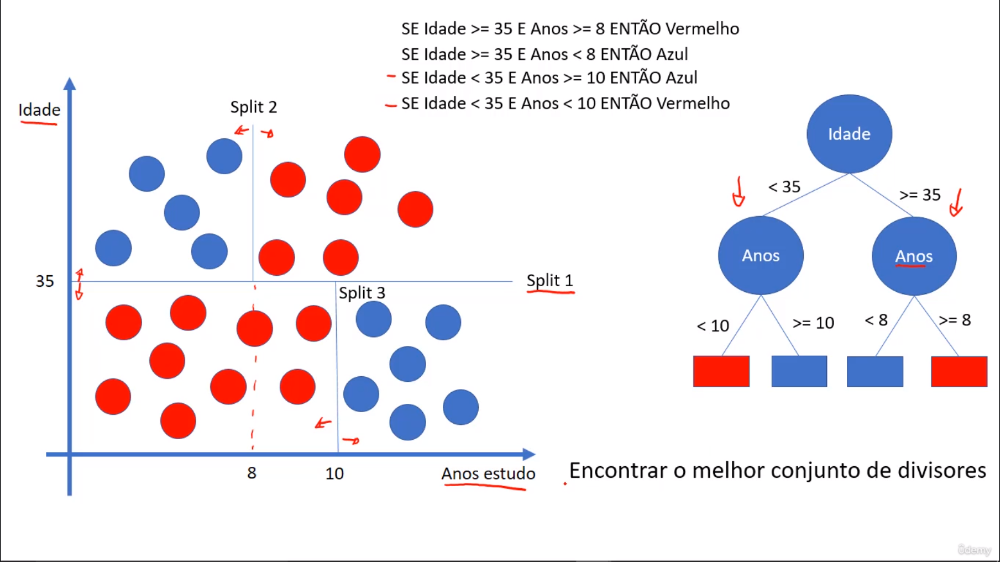Podas
Após a Árvore de Decisão estar completa, pode-se realizar podas em atributos da Árvore de Decisão com pouco ganho de informação. Raramente, em alguns casos, pode-se que, após a poda, o algoritmo da Árvore acabe errando em algumas situações, pois algumas informações foram removidas da mesma. Utiliza-se podas em cenários que encontram-se:
- Bias (Viés): Erros por classificação errada;
- Variância: Erros por sensibilidade pequena a mudanças na base de treinamento, onde haverão ramos muito específicos/amarrados à determinadas situações no último nível da Árvore. Pode levar a overfitting (Algoritmo se adapta excessivamente aos dados do treinamento, ficando amarrado aos mesmos, ou seja, decorar ao invés de aprender);
Base de Dados (Risco de Crédito - Pequena)
Aplicação de Árvore de Decisão para classificação de Risco de Crédito - Modelo teste.
#Importar libraries e upload do arquivo 'credit.pkl' com os dados e LabelEncoder aplicado:
from sklearn.tree import DecisionTreeClassifier
import pickle
with open('risco_credito.pkl', 'rb') as f:
X_risco_credito, y_risco_credito = pickle.load(f)
X_risco_credito
y_risco_credito
#Criar Árvore de Decisão e treiná-la:
arvore_risco_credito = DecisionTreeClassifier(criterion='entropy') #Por padrão, o criterion usa Gini (Cálculo de impureza de Gini), mas fora alterado para entropy (Cálculo da Entropia)
arvore_risco_credito.fit(X_risco_credito, y_risco_credito)
arvore_risco_credito.feature_importances_ #Ver valor do Ganho de Informação de cada atributo da Árvore
arvore_risco_credito.classes_ #Ver classes
#Visualizar Árvore de Decisão:
from sklearn import tree
tree.plot_tree(arvore_risco_credito) #Modo texto
previsores = ['história', 'dívida', 'garantias', 'renda']
figura, eixos = plt.subplots(nrows=1, ncols=1, figsize=(10,10))
tree.plot_tree(arvore_risco_credito, feature_names=previsores, class_names = arvore_risco_credito.classes_, filled=True);tree.plot_tree(arvore_risco_credito) #Modo gráfico (Imagem abaixo)
#Testar previsao com valores para teste:
#1. história boa, dívida alta, garantias nenhuma, renda > 35
#2. história ruim, dívida alta, garantias adequada, renda < 15
previsoes = arvore_risco_credito.predict([[0,0,1,2],[2,0,0,0]])
previsoes #Retornará, respectivamente, Baixo e Alto

Base de Dados (Risco de Crédito - credit data)
Aplicação de Árvore de Decisão para classificação de Risco de Crédito.
#Upload do arquivo 'credit.pkl' do credit data com dados e padronização aplicada:
with open('credit.pkl', 'rb') as f:
X_credit_treinamento, y_credit_treinamento, X_credit_teste, y_credit_teste = pickle.load(f)
#Visualizar números de quantidades (Registros, colunas):
X_credit_treinamento.shape, y_credit_treinamento.shape
X_credit_teste.shape, y_credit_teste.shape
#Criar Árvore de Decisão e treiná-la:
arvore_credit = DecisionTreeClassifier(criterion='entropy', random_state = 0) #Random State 0 o algoritmo sempre executará no mesmo ordenamento, facilitando comparações
arvore_credit.fit(X_credit_treinamento, y_credit_treinamento)
#Testar previsao com base para teste:
previsoes = arvore_credit.predict(X_credit_teste)
previsoes #0 indica pagador, 1 indica não pagador
y_credit_teste #Comparar previsões com respostas reais:
#Visualizar métricas de comparação:
from sklearn.metrics import accuracy_score, classification_report
accuracy_score(y_credit_teste, previsoes) #Precisão de 0,982 (98,2%)
#Gerar matriz de confusão (Eixo y (Vertical) é a resposta real, eixo x (Horizontal) é a resposta de previsão):
from yellowbrick.classifier import ConfusionMatrix
cm = ConfusionMatrix(arvore_credit)
cm.fit(X_credit_treinamento, y_credit_treinamento)
cm.score(X_credit_teste, y_credit_teste)
#Gerar classification_report:
print(classification_report(y_credit_teste, previsoes)) #Recall: O algoritmo consegue identificar x% corretamente. Precision: Quando o algoritmo acerta a previsão, o mesmo está correto em x% dos casos.
#Visualizar Árvore de Decisão:
arvore_credit.classes_ #Classes, que serão convertidas em String para a visuazação na Árvore abaixo
from sklearn import tree
previsores = ['income', 'age', 'loan']
fig, axes = plt.subplots(nrows = 1,ncols = 1,figsize = (20,20))
tree.plot_tree(arvore_credit, feature_names=previsores, class_names=['0','1'], filled=True);
fig.savefig('arvore_credit.png') #Salvar imagem da Árvore em arquivo
Base de Dados (Censo)
Aplicação de Árvore de Decisão para classificação de valor salarial.
#Upload do arquivo 'census.pkl' do credit data com dados e OneHotEncoder aplicado:
with open('census.pkl', 'rb') as f:
X_census_treinamento, y_census_treinamento, X_census_teste, y_census_teste = pickle.load(f)
#Visualizar números de quantidades (Registros, colunas):
X_census_treinamento.shape, y_census_treinamento.shape
X_census_teste.shape, y_census_teste.shape
#Criar Árvore de Decisão e treiná-la:
arvore_census = DecisionTreeClassifier(criterion='entropy', random_state=0)
arvore_census.fit(X_census_treinamento, y_census_treinamento)
previsoes = arvore_census.predict(X_census_teste)
previsoes
y_census_teste #Comparar previsões com respostas reais:
#Visualizar métricas de comparação:
accuracy_score(y_census_teste, previsoes) #Precisão de 0,810 (81%)
#Gerar matriz de confusão:
from yellowbrick.classifier import ConfusionMatrix
cm = ConfusionMatrix(arvore_census)
cm.fit(X_census_treinamento, y_census_treinamento)
cm.score(X_census_teste, y_census_teste)
#Gerar classification_report:
print(classification_report(y_census_teste, previsoes))
Random Forest:
São melhorias no processo de Árvore de Decisão, para adquirir melhor desempenho. Neste processo, utilizam-se várias Árvores de Decisão (Ensemble learning), escolhendo aleatoriamente K atributos para comparação da métrica pureza/impureza (impureza de gini/entropia), combinando cada conclusão final de Árvore de acordo com a média (Regressão) ou votos da maioria (Classificação) a fim de chegar em conclusão geral final. A quantidade de K atributos pode ser escolhida manualmente ou automaticamente (Algoritmo faz raíz quadrada do total de atributos da base). Supondo que hajam 3 Árvores para calcular Risco de Crédito e 3 atributos (K=3) diferentes entre si: a 1ª conclui 'Alto', a 2ª 'Baixo' e a 3ª 'Baixo'. Então, prevalece a conclusão 'Baixo'. Entretanto, quanto mais Árvores haverem no algoritmo, mais provável sera a chance de overfitting.
Base de Dados (Risco de Crédito - credit data)
Aplicação de Árvore de Decisão, com Random Forest, para classificação de Risco de Crédito.
#Importar libraries:
from sklearn.ensemble import RandomForestClassifier
import pickle
#Upload do arquivo 'credit.pkl' do credit data com dados e padronização aplicada:
with open('credit.pkl', 'rb') as f:
X_credit_treinamento, y_credit_treinamento, X_credit_teste, y_credit_teste = pickle.load(f)
#Visualizar números de quantidades (Registros, colunas):
X_credit_treinamento.shape, y_credit_treinamento.shape
X_credit_teste.shape, y_credit_teste.shape
#Criar treinamento Random Forest (40 Árvores), gerar previsões:
random_forest_credit = RandomForestClassifier(n_estimators=40, criterion='entropy', random_state = 0)
random_forest_credit.fit(X_credit_treinamento, y_credit_treinamento)
previsoes = random_forest_credit.predict(X_credit_teste)
previsoes
y_credit_teste #Comparar 'previsoes' com respostas reais (0 paga, 1 não paga empréstimo)
#Visualizar métricas de comparação:
from sklearn.metrics import accuracy_score, classification_report
accuracy_score(y_credit_teste, previsoes) #Precisão de 0,984 (98,4%)
#Gerar matriz de confusão:
from yellowbrick.classifier import ConfusionMatrix
cm = ConfusionMatrix(random_forest_credit)
cm.fit(X_credit_treinamento, y_credit_treinamento)
cm.score(X_credit_teste, y_credit_teste)
#Gerar classification_report:
print(classification_report(y_credit_teste, previsoes)) #O algoritmo consegue identificar corretamente 99% dos elementos da classe 0 (Recall). Quando identifica, 99% das vezes está correto (Precision)
Base de Dados (Censo)
Aplicação de Árvore de Decisão, com Random Forest, para classificação de valor salarial.
#Importar libraries:
from sklearn.ensemble import RandomForestClassifier
import pickle
#Upload do arquivo 'census.pkl' do credit data com dados e OneHotEncoder aplicado:
with open('census.pkl', 'rb') as f:
X_census_treinamento, y_census_treinamento, X_census_teste, y_census_teste = pickle.load(f)
#Visualizar números de quantidades (Registros, colunas):
X_census_treinamento.shape, y_census_treinamento.shape
X_census_teste.shape, y_census_teste.shape
y_census_treinamento #Ver classes
#Criar treinamento Random Forest (100 Árvores - padrão), gerar previsões:
random_forest_census = RandomForestClassifier(n_estimators=100, criterion='entropy', random_state = 0)
random_forest_census.fit(X_census_treinamento, y_census_treinamento)
previsoes = random_forest_census.predict(X_census_teste)
previsoes
y_census_teste #Comparar 'previsoes' com respostas reais
Verificar accuracy:
from sklearn.metrics import accuracy_score, classification_report
accuracy_score(y_census_teste, previsoes) #0.8507676560900717 (85%)
#Gerar matriz de confusão:
from yellowbrick.classifier import ConfusionMatrix
cm = ConfusionMatrix(random_forest_census)
cm.fit(X_census_treinamento, y_census_treinamento)
cm.score(X_census_teste, y_census_teste)
#Gerar classification_report:
print(classification_report(y_census_teste, previsoes))
----- Aprendizagem por Regras -----
Geração de regras (IF..THEN) e, após isso, novos registros serão submetido às mesmas (Todos atributos envolvidos True, então usa-se tal regra e tem-se a previsão). No geral, algoritmos de regras tendem a serem mais lentos do que de Árvores, não havendo diferença de melhores resultados de previsões quando ambos comparados. Utilizou-se, como exemplo, os dados da base de risco de crédito (Aqui).
- Se renda =>35000 E história de crédito = boa, ENTÃO risco = baixo
- Se renda =>35000 E história de crédito = desconhecida, ENTÃO risco = baixo
- Default (Padrão), ENTÃO risco = alto
OneR
OneRules, gerará 1 regra baseada em 1 atributo mais importante. Submetendo tal algoritmo na base Risco de Crédito, gerará a seguinte tabela, onde o atributo 'Renda' foi escolhido como principal, pois há menor chance de erro (Total erro). Esse mesmo algoritmo pode ser testado no software Weka.
| Atributo | Quantidade | Regras | Erro | Total erro |
|---|---|---|---|---|
| História de Crédito | Boa 5 | SE boa ENTÃO baixo | 2/5 | 6/14 |
| Desconhecida 5 | SE desconhecida ENTÃO alto | 3/5 | ||
| Ruim 4 | SE ruim ENTÃO alto | 1/4 | ||
| Dívida | Alta 7 | SE alta ENTÃO alto | 3/7 | 7/14 |
| Baixa 7 | SE baixa ENTÃO baixo | 4/7 | ||
| Garantias | Nenhuma 11 | SE nenhuma ENTÃO alto | 5/11 | 6/14 |
| Adequada 3 | SE adequada ENTÃO baixo | 1/3 | ||
| Renda | <15000 3 | SE <15000 ENTÃO alto | 0 | 4/14 |
| >=15000 a <=35000 4 | SE >=15000 a <=35000 ENTÃO alto | 2/4 | ||
| >35000 7 | SE >35000 ENTÃO baixo | 2/7 |
Para a montagem das regras acima, contabilizam-se as possibilidades de cada regra/atributo. O exemplo abaixo fora utilizado somente 'História de Crédito' (Deve ser feito com todos), pois para as demais segue a mesma lógica:
-
História de Crédito:
- SE boa ENTÃO alto (1)
- SE boa ENTÃO moderado (1)
- SE boa ENTÃO baixo (3) - Escolhida
- ERRO: Para cada 5 (Total), 2 podem ser errados (2 fora da regra escolhida) = 2/5
- SE desconhecida ENTÃO alto (2) - Escolhida (Não há critério em empates, aparece primeiro)
- ERRO: Para cada 5, 3 podem ser errados = 3/5
- SE desconhecida ENTÃO moderado (1)
- SE desconhecida ENTÃO baixo (2)
- SE ruim ENTÃO alto (3) - Escolhida
- ERRO: Para cada 4, 1 pode ser errado = 1/4
- SE ruim ENTÃO moderado (1)
- SE ruim ENTÃO baixo (0)
- TOTAL ERRO: (2+3+1)/(5+5+4) = 6/14

*Weka (Arquivo risco_credito.arff submetido ao OneR)
PRISM
Gerar 1 regra específica com vários atributos, identificando-os via maior abrangência, que classificará os registros conforme resposta esperada. Exemplo, passo a passo, da montagem da regra:
- SE ? ENTÃO risco = alto
- SE garantias = nenhuma ENTÃO risco = alto
| Atributo/Valor | Abrangência |
|---|---|
| História de crédito = Boa | 1/1 (História de crédito boa E risco alto) |
| História de crédito = Desconhecida | 2/2 |
| História de crédito = Ruim | 3/3 |
| Dívida = Alta | 4/4 |
| Dívida = Baixa | 2/2 |
| Garantias = Nenhuma (Mais abrangente) | 6/6 |
| Garantias = Adequada | 0/3 (3 Garantias adequadas, mas nenhuma com risco alto) |
| Renda = <15000 | 3/3 |
| Renda = 15000-35000 | 2/2 |
| Renda = >35000 | 1/1 |
- SE garantias = nenhuma E ? ENTÃO risco = alto
- SE garantias = nenhuma E dívida = alta ENTÃO risco = alto
| Atributo/Valor | Abrangência |
|---|---|
| História de crédito = Boa | 1/1 (História de crédito boa E garantias nenhuma E risco alto) |
| História de crédito = Desconhecida | 2/2 |
| História de crédito = Ruim | 3/3 |
| Dívida = Alta (Mais abrangente) | 4/4 |
| Dívida = Baixa | 2/2 |
| Renda = <15000 | 3/3 |
| Renda = 15000-35000 | 2/2 |
| Renda = >35000 | 1/1 |
- SE garantias = nenhuma E dívida = alta E ? ENTÃO risco = alto
- SE garantias = nenhuma E dívida = alta E história = ruim ENTÃO risco = alto
| Atributo/Valor | Abrangência |
|---|---|
| História de crédito = Boa | 1/1 (História de crédito boa E garantias nenhuma E dívida alta E risco alto) |
| História de crédito = Desconhecida | 1/1 |
| História de crédito = Ruim (Mais abrangente) | 2/2 |
| Renda = <15000 | 2/2 |
| Renda = 15000-35000 | 2/2 |
| Renda = >35000 | 0 |
- SE garantias = nenhuma E dívida = alta E história = ruim E ? ENTÃO risco = alto
- SE garantias = nenhuma E dívida = alta E história = ruim E renda <15000 ENTÃO risco = alto
| Atributo/Valor | Abrangência |
|---|---|
| Renda = <15000 (Mais abrangente) | 1/1 |
| Renda = 15000-35000 | 1/1 |
| Renda = >35000 | 0 |
- Após isso, o mesmo deverá ser feito para 'risco = médio' e 'risco = baixo'
OBSERVAÇÃO: Como os registros acima foram bastante específicos (Ex: 1/1), pode-se ocorrer overfitting! Para evitar isso, pode-se utilizar 'poda' de tais atributos muito específicos, ou seja, com poucos dados envolvidos.
Base de Dados (Risco de Crédito - Pequena)
Aplicação de Indução de Regras para classificação de Risco de Crédito - Modelo teste.
#Importar libraries e upload do arquivo com dados, LabelEncoder aplicado e organizado para Orange, com 'c#risco' para atributo classe:
!pip install Orange3
import Orange
base_risco_credito = Orange.data.Table('risco_credito_regras.csv')
base_risco_credito
base_risco_credito.domain #Mostrar cabeçalho/domínio
#(Treinamento) Criar regras, submetendo os dados ao algoritmo de regras 'cn2':
cn2 = Orange.classification.rules.CN2Learner()
regras_risco_credito = cn2(base_risco_credito)
for regras in regras_risco_credito.rule_list:
print(regras)
#Testar previsão com valores para teste:
previsoes = regras_risco_credito([['boa', 'alta', 'nenhuma', 'acima_35'], ['ruim', 'alta', 'adequada', '0_15']])
previsoes #Obteve-se 1 e 0
base_risco_credito.domain.class_var.values #0 é alto, 1 é baixo, 2 é moderado
for i in previsoes:
#print(i)
print(base_risco_credito.domain.class_var.values[i])
Base de Dados (Risco de Crédito - credit data)
Aplicação de Indução de Regras para classificação de Risco de Crédito.
#Importar libraries e upload do arquivo com dados e padronização aplicada, com 'i#clientid' para ser ignorado, e 'c#default' para atributo classe:
!pip install Orange3
import Orange
base_credit.domain #Mostrar cabeçalho/domínio
Dividir base de dados treinamento-teste:
base_dividida = Orange.evaluation.testing.sample(base_credit, n = 0.25) #25% para teste, 75% para treino
base_dividida
base_dividida[0]
base_dividida[1]
base_teste = base_dividida[0]
base_treinamento = base_dividida[1]
len(base_teste), len(base_treinamento)
#(Treinamento) Criar regras, submetendo os dados ao algoritmo de regras 'cn2':
cn2 = Orange.classification.rules.CN2Learner()
regras_credit = cn2(base_treinamento)
for regras in regras_credit.rule_list:
print(regras)
#Testar previsão com valores para teste:
previsoes = Orange.evaluation.testing.TestOnTestData(base_treinamento, base_teste, [lambda testdata: regras_credit])
Orange.evaluation.CA(previsoes) #(97,4%) CA para 'Classification Accuracy', ou F1 para 'F1 Score'
Base de Dados (Censo) - Orange GUI
Aplicação de Indução de Regras, via Orange GUI, para classificação de valor salarial. Instalar Orange via 'pip3 install orange3'.
Seguindo o passo a passo da modelagem, tem-se 80,7% de accuracy.
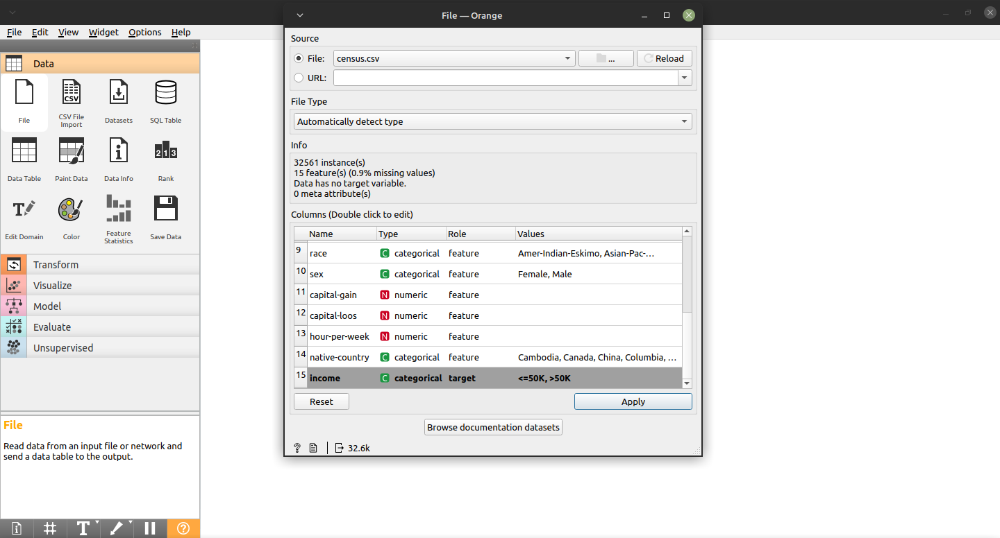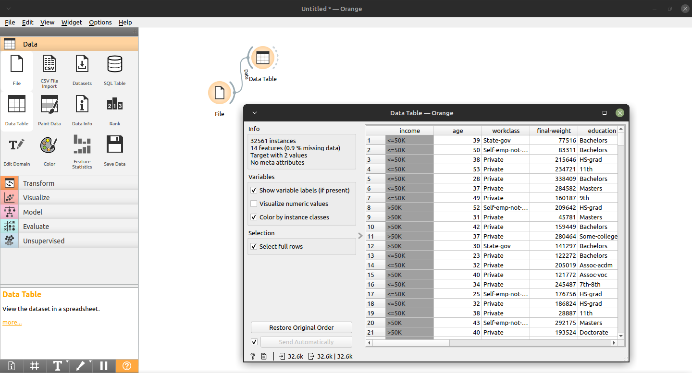


Elaborado por Mateus Schwede
ubsocial.github.io